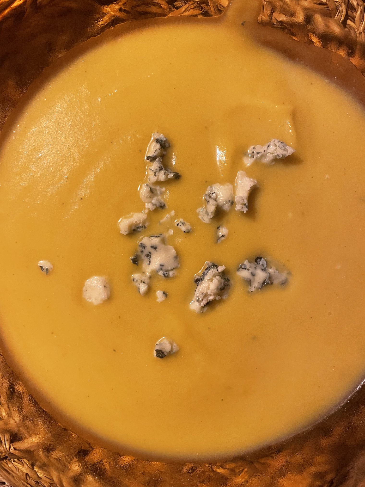

Crema de calabaza y roquefort
Ingredientes
4×
- 1 cebolla
- aceite de oliva
- 800 g de calabaza
- 1 crdita de caldo de verduras
- 50 g de roquefort

Preparación
Paso 1
Sofreír 1 cebolla picada con un poco de aceite de oliva.
Paso 2
Añadir 800 g de calabaza en dados, cubrir con agua, poner 1 crdita de caldo de verduras y cocer 20min.
Paso 3
Triturar y salpimentar.
Paso 4
Servir con 50 g de roquefort desmenuzado por encima.